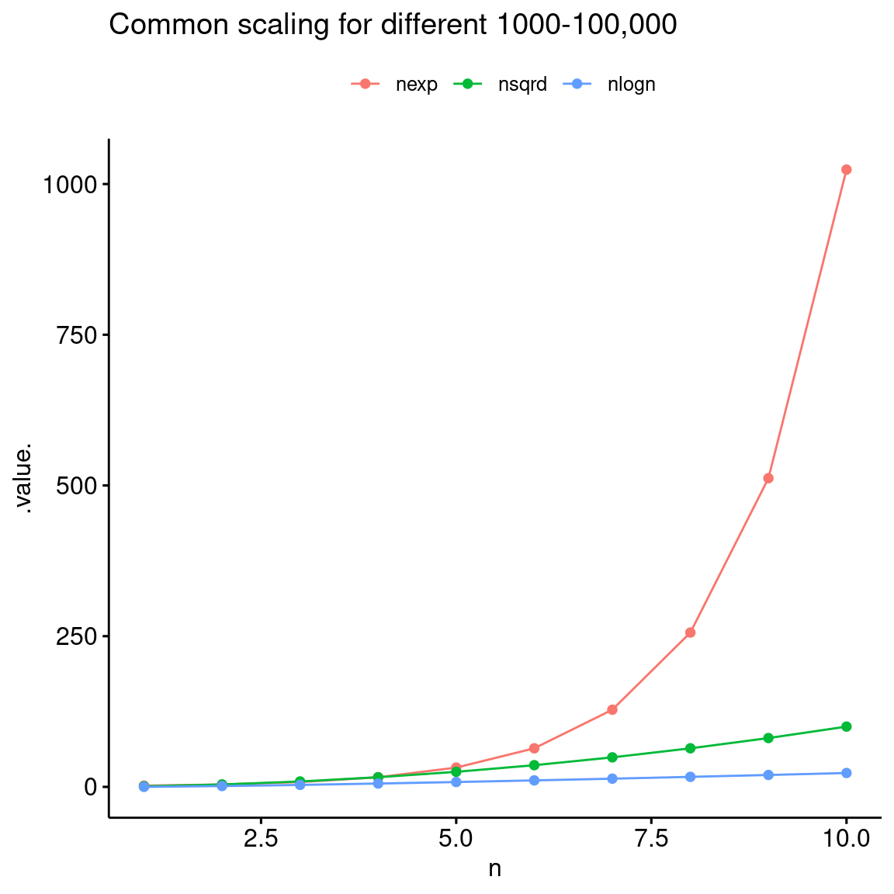
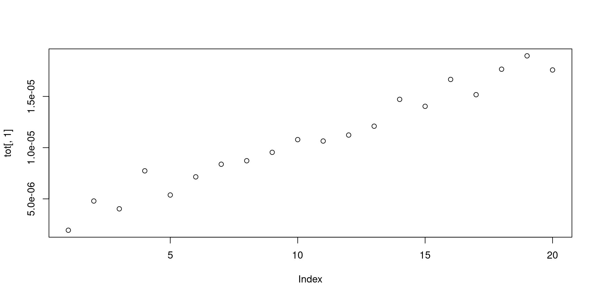
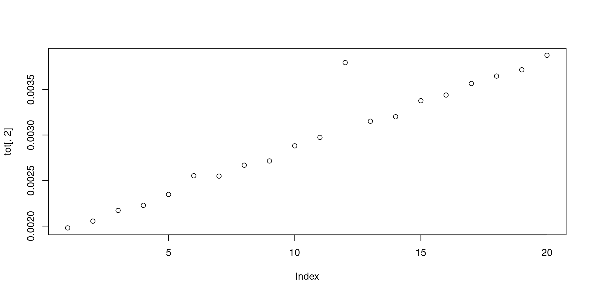

[1] 2 3 4 5 6Today’s lab meeting:
Rendered similar to .rmd/.qmd docs/websites/books etc.
Can be hosted on Github pages
Multiple rendering formats (Powerpoint, beamer, revealjs)
For non-interactive code, you can use R, Python, bash etc. as you would use in a regular rmarkdown or quarto doc.
total 140K
drwxr-xr-x 8 runner docker 4.0K Aug 15 11:08 .
drwxr-xr-x 3 runner docker 4.0K Aug 15 10:57 ..
drwxr-xr-x 8 runner docker 4.0K Aug 15 10:57 .git
drwxr-xr-x 3 runner docker 4.0K Aug 15 11:08 .github
-rw-r--r-- 1 runner docker 41 Aug 15 10:57 .gitignore
-rw-r--r-- 1 runner docker 20K Aug 15 10:57 LICENSE.md
-rw-r--r-- 1 runner docker 2.5K Aug 15 10:57 README.md
-rw-r--r-- 1 runner docker 68K Aug 15 10:57 UL_slides_template.png
drwxr-xr-x 5 runner docker 4.0K Aug 15 10:57 _extensions
-rw-r--r-- 1 runner docker 26 Aug 15 10:57 _quarto.yml
drwxr-xr-x 3 runner docker 4.0K Aug 15 10:57 assets
drwxr-xr-x 2 runner docker 4.0K Aug 15 11:08 build
-rw-r--r-- 1 runner docker 3.5K Aug 15 10:57 index.qmd
-rw-r--r-- 1 runner docker 3.9K Aug 15 11:08 index.rmarkdown
drwxr-xr-x 3 runner docker 4.0K Aug 15 11:08 index_files
---
title: "Binary distance calculations for missing data with Quarto"
format:
live-revealjs:
slide-number: true
show-slide-number: speaker
chalkboard: true
code-line-numbers: true
preview-links: auto
width: 1350Mainly concerned with how an algorithm scales in terms of runtime or memory (among other things) as the input size increases.
Uses ‘Big O’ notation where n is the size of the input e.g. O(n), O(n^2)
Big O notation doesn’t capture the actual time/memory usage, just it’s relationship with the size of input data

[1] "2024-08-15 11:08:59 UTC" user system elapsed
0 0 2 2.004 sec elapsed$tic
elapsed
3.638
$toc
elapsed
5.642
$msg
logical(0)
$callback_msg
[1] "2.004 sec elapsed"Unit: seconds
expr min lq mean median uq max neval
wait1 2.002054 2.002054 2.002059 2.002059 2.002063 2.002063 2
wait2 4.004040 4.004040 4.004043 4.004043 4.004046 4.004046 2So, we now have introduced some concepts for understanding and measuring the efficiency of our code. Now let’s look at a simple application of vectorisation.
Loops get a bad rep in R for a couple of reasons.
Unit: seconds
expr min lq mean median uq max
vec 0.000000331 0.000000501 9.892330e-07 0.000000877 0.0000014425 0.000004348
loop 0.001672096 0.001726602 1.817976e-03 0.001748117 0.0017716260 0.008147280
neval
1000
1000 test replications elapsed relative user.self sys.self user.child sys.child
2 loop 1000 1.811 603.667 1.810 0 0 0
1 vec 1000 0.003 1.000 0.002 0 0 0[1] 500
[1] 1000
[1] 1500
[1] 2000
[1] 2500
[1] 3000
[1] 3500
[1] 4000
[1] 4500
[1] 5000
[1] 5500
[1] 6000
[1] 6500
[1] 7000
[1] 7500
[1] 8000
[1] 8500
[1] 9000
[1] 9500
[1] 10000
